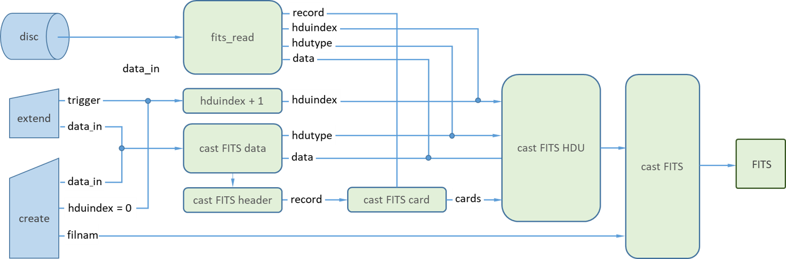

CamiFITS.jl
FITS stands for Flexible Image Transport System. This is an open standard originally developed for the astronomy community to store telescope images together with tables of spectral information. Over the years it has developed into a scientific standard [W. D. Pence et al., A&A, 524 (2010) A42]. The standard is maintained by the FITS Support Office at NASA/GSFC [FITS standard - Version 4.0]. The website also offers a FITS Conformance Verifier.
CamiFITS offers the basic FITS functionality for scientific users not requiring celestal coordinates. Optional Conforming Extensions are under development. The user can create, read and extend .fits files as well as create, edit and delete user-defined metainformation.
Disclaimer 2023-05-27: The author is currently writing the manual. In this process the code is tested, both with regard to FITS conformance and runtest coverage. Known issues remain to be solved and the package certainly did not reach a stable form.
Table of contents
Install
The package is installed using the Julia package manager
julia> using Pkg; Pkg.add("CamiFITS")
julia> using CamiFITSManual
Introduction
A FITS file consists of a sequence of one or more Header and Data Units (FITS_HDUs), each containing a FITS_data block (containing one or more images) preceeded by a FITS_header of records with metainformation.
The first HDU in a .fits file is called the PRIMARY HDU. It is an IMAGE HDU, one of the STANDARD HDU types IMAGE, ASCII TABLE and BINTABLE.
Let "example.fits" be an existing .fits file. By the commands
julia> filnam = "example.fits"
"example.fits"
julia> f = fits_read(filnam);we asign the FITS object (read from the .fits file filnam on disc) to the variable f. All information of a given .fits file is stored in the FITS object, its structure is shown in the diagram below.

The fields of f (f.hdu[1], f.hdu[2], ...) correspond to FITS_HDU objects. The PRIMARY HDU of the FITS object is represented by f.hdu[1]. The header records are contained in an array of single-record cards.
The formal terminology of the FITS standard can be consulted using fits_terminology:
julia> fits_terminology("HDU")
HDU:
Header and Data Unit. A data structure consisting of a header and the data the
header describes. Note that an HDU may consist entirely of a header with no
data blocks.The words must, shall, may, recommended, required and optional are to be interpreted as described in the IETF standard - RFC 2119.
Creating a simple FITS file
FITS files can be created using the command fits_create. This process proceeds in two steps: (a) first a FITS object is constructed starting from the data provided (in Julia format); (b) this FITS object is autosaved under the specifified name (e.g., name.fits).
Example:
The minimal file conforming to the FITS standard consists of a single HDU with an empty data field.
julia> filnam = "minimal.fits";
julia> f = fits_create(filnam; protect=false);
julia> fits_info(f)
File: minimal.fits
hdu: 1
hdutype: PRIMARY
DataType: Any
Datasize: (0,)
Metainformation:
SIMPLE = T / file does conform to FITS standard
BITPIX = 64 / number of bits per data pixel
NAXIS = 1 / number of data axes
NAXIS1 = 0 / length of data axis 1
EXTEND = T / FITS dataset may contain extensions
COMMENT Extended FITS HDU / http://fits.gsfc.nasa.gov/
END
Any[]Note how the FITS object is inspected using the fits_info tool.
The header of a FITS_HDU is contained in an array of single-record .card objects as illustrated in the flow diagram above. To find the cardindex associated with a keyword (e.g., "NAXIS") we can use the header.map:
julia> i = f.hdu[1].header.map["NAXIS"]
3The result is easily verified:
julia> f.hdu[1].header.card[i].cardindex
3The full record is:
julia> f.hdu[1].header.card[3].record
"NAXIS = 1 / number of data axes Once ready it is good practice to remove the example:
julia> rm(filnam); f = nothingThe FITS file for a simple image
Rather than inspecting the FITS object directly, CamiFITS offers the fits_info and fits_record_dump tools. To demonstrate these tools we first create a simple image in the form of a 3x3 matrix:
julia> filnam = "matrix.fits";
julia> data = [11,21,31,12,22,23,13,23,33];
julia> data = reshape(data,(3,3,1))
3×3×1 Array{Int64, 3}:
[:, :, 1] =
11 12 13
21 22 23
31 23 33We next create the FITS object for 'data' (our image).
julia> f = fits_create(filnam, data; protect=false);We can inspect the FITS object using the info tool:
julia> fits_info(f)
File: matrix.fits
hdu: 1
hdutype: PRIMARY
DataType: Int64
Datasize: (3, 3, 1)
Metainformation:
SIMPLE = T / file does conform to FITS standard
BITPIX = 64 / number of bits per data pixel
NAXIS = 3 / number of data axes
NAXIS1 = 3 / length of data axis 1
NAXIS2 = 3 / length of data axis 2
NAXIS3 = 1 / length of data axis 3
EXTEND = T / FITS dataset may contain extensions
COMMENT Primary FITS HDU / http://fits.gsfc.nasa.gov
END
3×3×1 Array{Int64, 3}:
[:, :, 1] =
11 12 13
21 22 23
31 23 33
julia> f = nothingThe keywords NAXIS1, NAXIS2 and NAXIS3 represent the dimensions of the $x, y$ data matrix stacked in the $z$ direction.
The matrix elements are referred to as pixels and their bit size is represented by the keyword BITPIX. In the above example the pixel value is used to indicate the matrix indices.
The FITS object f has been closed above but its contents was autosaved under the name filnam = 'matrix.fits'. To access the image data of filnam we can fits_read the FITS object from disk but it is simpler to access the data using fits_info for image processing in Julia:
julia> dataout = fits_info(filnam; msg=false)
3×3×1 Array{Int64, 3}:
[:, :, 1] =
11 12 13
21 22 23
31 23 33
julia> dataout == data
true
julia> rm(filnam); f = data = dat = nothingComment
Note that the relevant mandatory keywords are autogenerated by fits_create, starting from the Julia datatype and using the FITS object casting procedures, cast_FITS, cast_FITS_filnam, cast_FITS_HDU, cast_FITS_header, cast_FITS_card and cast_FITS_data. The casting procedures keep track of comformance to the FITS standard.
For users primarily interested in image processing the casting procedures are not very relevant because CamiFITS takes care of them when usung fits_create and fits_create.
FITS keyword description tool
In the CamiFITS package the mandatory FITS keywords are autogenerated. To support easy user access to the definition of all reserved FITS keywords (mandatory or non-mandatory) CamiFITS includes the fits_keyword tool.
The description of the FITS keywords is provided by fits_keyword:
julia> fits_keyword("bitpix")
KEYWORD: BITPIX
REFERENCE: FITS Standard - version 4.0 - Appendix C
CLASS: general
STATUS: mandatory
HDU: primary, groups, extension, array, image, ASCII-table, bintable,
VALUE: integer
RANGE: -64,-32,8,16,32,64
COMMENT: bits per data value
DEFINITION: The value field shall contain an integer. The absolute value is
used in computing the sizes of data structures. It shall specify the number of
bits that represent a data value (using a minus sign for floating point data).Without argument fits_keyword provides the list of all FITS defined keywords (for the HDU types inplemented).
julia> fits_keyword()
FITS defined keywords:
(blanks) AUTHOR BITPIX BLANK BLOCKED BSCALE BUNIT BZERO
CDELTn COMMENT CROTAn CRPIXn CRVALn CTYPEn DATAMAX DATAMIN
DATE DATE-OBS END EPOCH EQUINOX EXTEND EXTLEVEL EXTNAME
EXTVER GCOUNT GROUPS HISTORY INSTRUME NAXIS NAXISn OBJECT
OBSERVER ORIGIN PCOUNT PSCALn PTYPEn PZEROn REFERENC SIMPLE
TBCOLn TDIMn TDISPn TELESCOP TFIELDS TFORMn THEAP TNULLn
TSCALn TTYPEn TUNITn TZEROn XTENSION
HDU options: 'primary', 'extension', 'array', 'image', 'ASCII-table', 'bintable'
reference: FITS Standard - version 4.0 - Appendix CSpecifying the FITS HDU type in fits_keyword the user obtains the restricted set of HDU-specific keywords.
julia> fits_keyword(hdutype="'PRIMARY '")
FITS defined keywords:
HDU type: 'primary'
- general
- mandatory: BITPIX END NAXIS NAXISn SIMPLE
- reserved : BLANK BSCALE BUNIT BZERO CDELTn CROTAn CRPIXn
CRVALn CTYPEn DATAMAX DATAMIN EXTEND
- bibliographic
- mandatory:
- reserved : AUTHOR REFERENC
- commentary
- mandatory:
- reserved : (blanks) COMMENT HISTORY
- observation
- mandatory:
- reserved : DATE-OBS EPOCH EQUINOX INSTRUME OBJECT OBSERVER TELESCOP
HDU options: 'primary', 'extension', 'array', 'image', 'ASCII-table', 'bintable'
reference: FITS Standard - version 4.0 - Appendix CBy using the keyword "ALL" the user can dump the full list of keyword descriptions:
julia> fits_keyword("all")
FITS defined keywords:
KEYWORD: (blank)
REFERENCE: FITS Standard - version 4.0 - Appendix C
CLASS: commentary
STATUS: reserved
HDU: primary, groups, extension, array, image, ASCII-table, bintable,
VALUE: none
COMMENT: descriptive comment
DEFINITION: Columns 1-8 contain ASCII blanks. This keyword has no associated
value. Columns 9-80 may contain any ASCII text. Any number of card images
with blank keyword fields may appear in a header.
⋮
KEYWORD: XTENSION
REFERENCE: FITS Standard - version 4.0 - Appendix C
CLASS: general
STATUS: mandatory
HDU: extension, array, image, ASCII-table, bintable,
VALUE: string
COMMENT: marks beginning of new HDU
DEFINITION: The value field shall contain a character string giving the name of
the extension type. This keyword is mandatory for an extension header and must
not appear in the primary header. For an extension that is not a standard
extension, the type name must not be the same as that of a standard extension.
API
Terminology and keyword descriptions
CamiFITS.fits_terminology — Methodfits_terminology([term::String [; test=false]])Description of the defined terms from FITS standard:
ANSI, ASCII, ASCII NULL, ASCII character, ASCII digit, ASCII space, ASCII text, Array, Array value, Basic FITS, Big endian, Bit, Byte, Card image, Character string, Conforming extension, Data block, Deprecate, Entry, Extension, Extension type name, FITS, FITS Support Office, FITS block, FITS file, FITS structure, Field, File, Floating point, Fraction, Group parameter value, HDU Header and Data Unit., Header, Header block, Heap, IAU, IAUFWG, IEEE, IEEE NaN, IEEE special values, Indexed keyword, Keyword name, Keyword record, MEF, Mandatory keyword, Mantissa, NOST, Physical value, Pixel, Primary HDU, Primary data array, Primary header, Random Group, Record, Repeat count, Reserved keyword, SIF, Special records, Standard extension.
julia> fits_terminology()
FITS defined terms:
ANSI, ASCII, ASCII NULL, ASCII character, ..., SIF, Special records, Standard extension.
julia> fits_terminology("FITS")
FITS:
Flexible Image Transport System.
julia> get(dictDefinedTerms, "FITS", nothing)
"Flexible Image Transport System."
julia> fits_terminology("p")
p:
Not one of the FITS defined terms.
suggestions: Physical value, Pixel, Primary HDU, Primary data array, Primary header.
see FITS Standard - https://fits.gsfc.nasa.gov/fits_standard.htmlCamiFITS.fits_keyword — Methodfits_keyword(keyword::String [; msg=true])
fits_keyword([; hdutype="all" [, msg=true]])Description of the reserved keywords of the FITS standard:
(blanks), ALL, AUTHOR, BITPIX, BLANK, BLOCKED, BSCALE, BUNIT, BZERO, CDELTn, COMMENT, CROTAn, CRPIXn, CRVALn, CTYPEn, DATAMAX, DATAMIN, DATE, DATE-OBS, END, EPOCH, EQUINOX, EXTEND, EXTLEVEL, EXTNAME, EXTVER, GCOUNT, GROUPS, HISTORY, INSTRUME, NAXIS, NAXISn, OBJECT, OBSERVER, ORIGIN, PCOUNT, PSCALn, PTYPEn, PZEROn, REFERENC, SIMPLE, TBCOLn, TDIMn, TDISPn, TELESCOP, TFIELDS, TFORMn, THEAP, TNULLn, TSCALn, TTYPEn, TUNITn, TZEROn, XTENSION,
where n = 1,...,nmax as specified for the keyword. Use the keyword "ALL" to dump the full list of keyword descriptions.
The descriptions are based on appendix C to FITS standard - version 4.0, which is not part of the standard but included for convenient reference.
julia> fits_keyword("naxisn");
KEYWORD: NAXISn
REFERENCE: FITS Standard - version 4.0 - Appendix C
CLASS: general
STATUS: mandatory
HDU: primary, groups, extension, array, image, ASCII-table, bintable,
VALUE: integer
RANGE: [0:]
COMMENT: size of the axis
DEFINITION: The value field of this indexed keyword shall contain a non-negative integer,
representing the number of elements along axis n of a data array.
The NAXISn must be present for all values n = 1,...,NAXIS, and for no other values of n.
A value of zero for any of the NAXISn signifies that no data follow the header in the HDU.
If NAXIS is equal to 0, there should not be any NAXISn keywords.
julia> fits_keyword()
FITS defined keywords:
(blanks) AUTHOR BITPIX BLANK BLOCKED BSCALE BUNIT BZERO
CDELTn COMMENT CROTAn CRPIXn CRVALn CTYPEn DATAMAX DATAMIN
DATE DATE-OBS END EPOCH EQUINOX EXTEND EXTLEVEL EXTNAME
EXTVER GCOUNT GROUPS HISTORY INSTRUME NAXIS NAXISn OBJECT
OBSERVER ORIGIN PCOUNT PSCALn PTYPEn PZEROn REFERENC SIMPLE
TBCOLn TDIMn TDISPn TELESCOP TFIELDS TFORMn THEAP TNULLn
TSCALn TTYPEn TUNITn TZEROn XTENSION
HDU options: 'primary', 'extension', 'array', 'image', 'ASCII-table', 'bintable'
reference: FITS Standard - version 4.0 - Appendix CFITS
Types
CamiFITS.FITS — TypeFITS(filnam::String, hdu::Vector{FITS_HDU})Object to hold a single .fits file.
The fields are
.filnam: filename of the corresponding.fitsfile (::String).hdu: array ofFITS_HDUs (::Vector{FITS_HDU})
CamiFITS.FITS_filnam — TypeFITS_filnammutable FITS object to hold the decomposed name of a .fits file.
The fields are: " .value: for p#.fits this is p#.fits (::String)
.name: forp#.fitsthis isp#(::String).prefix: forp#.fitsthis isp(::String).numerator: forp#.fitsthis is#, a serial number (e.g., '3') or a range (e.g., '3-7') (::String).extension: forp#.fitsthis is.fits(::String)
CamiFITS.FITS_HDU — TypeFITS_HDUObject to hold a single "Header and Data Unit" (HDU).
The fields are
.hduindex:: identifier (a file may contain more than one HDU) (:Int).header: the header object (::FITS_header).dataobject: the data object (::FITS_data)
NB. An empty data block (.dataobject = nothing) conforms to the standard.
CamiFITS.FITS_header — TypeFITS_headerObject to hold the header information of a FITS_HDU.
The fields are:
.card: the array ofcards(::Vector{FITS_card}).map: Dictionarykeyword => recordindex(::Dict{String, Int})
CamiFITS.FITS_card — TypeFITS_cardObject to hold the card information of the FITS_header object.
The fields are:
.cardindex: identifier of the header record (::Int).record: the full record on the card (::String).keyword: name of the corresponding header record (::String).val: value of the corresponding header record (::Any).comment: comment on the corresponding header record (::String)
CamiFITS.FITS_data — TypeFITS_dataObject to hold the data of the FITS_HDU of given hduindex and hdutype.
The fields are:
.hdutype: accepted types are 'PRIMARY', 'IMAGE' and 'TABLE' (::String).data: in the from appropriate for thehdutype(::Any)
Type casting
The casting of the FITS object is illustrated in the flow diagram below. 
CamiFITS.cast_FITS — Methodcast_FITS(filnam::String, hdu::Vector{FITS_HDU})Create the FITS object to hold a single .fits file.
CamiFITS.cast_FITS_filnam — Methodcast_FITS_filnam(filnam::String)Create the FITS_filnam object to decompose filnam into its name, prefix, numerator and extension.
Example:
julia> filnam = "T23.01.fits";
julia> nam = cast_FITS_filnam(filnam);
julia> nam = cast_FITS_filnam(filnam)
FITS_filnam("T23.01.fits", "T23.01", "T23.", "01", ".fits")
julia> nam.name, nam.prefix, nam.numerator, nam.extension
("T23.01", "T23.", "01", ".fits")CamiFITS.cast_FITS_HDU — Methodcast_FITS_HDU(hduindex::Int, header::FITS_header, data::FITS_data)Create the FITS_HDU object from given hduindex, header and data.
Example:
julia> record = [rpad("r$i",8) * ''' * rpad("$i",70) * ''' for i=1:36];
julia> h = cast_FITS_header(record);
julia> data = [11,21,31,12,22,23,13,23,33];
julia> data = reshape(data,(3,3,1));
julia> d = dataobject = cast_FITS_data("IMAGE", data)
FITS_data("IMAGE", [11 12 13; 21 22 23; 31 23 33;;;])
julia> hdu = cast_FITS_HDU(1, h, d);
julia> hdu.header.card[35].record
"r35 '35 '"
julia> hdu.dataobject.data
3×3×1 Array{Int64, 3}:
[:, :, 1] =
11 12 13
21 22 23
31 23 33CamiFITS.cast_FITS_header — Methodcast_FITS_header(dataobject::FITS_data)Create the FITS_header object from the dataobject. The dataobject-input mode is used by fits_create to ceate the header object as part of creating the FITS obhectstarting from Julia data input.
cast_FITS_header(record::Vector{String})Create the FITS_header object from a block of 36 single-record strings (of 80 printable ASCII characters). The record-input mode is used by fits_read after reading the header records from disk.
Example:
julia> record = [rpad("r$i",8) * ''' * rpad("$i",70) * ''' for i=1:36]
36-element Vector{String}:
"r1 '1 " ⋯ 18 bytes ⋯ " '"
"r2 '2 " ⋯ 18 bytes ⋯ " '"
"r3 '3 " ⋯ 18 bytes ⋯ " '"
⋮
"r34 '34 " ⋯ 18 bytes ⋯ " '"
"r35 '35 " ⋯ 18 bytes ⋯ " '"
"r36 '36 " ⋯ 18 bytes ⋯ " '"
julia> h = cast_FITS_header(record);
julia> a35 = h.map["r35"]
35
julia> h.card[35].record
"r35 '35 '"CamiFITS.cast_FITS_card — Methodcast_FITS_card(cardindex::Int, record::String)Create the FITS_card object for record with index cardindex.
Example:
julia> record = "SIMPLE = T / file does conform to FITS standard ";
julia> card = cast_FITS_card(1, record);
julia> card.cardindex, card.keyword, card.value, card.comment
(1, "SIMPLE", true, "file does conform to FITS standard ")CamiFITS.cast_FITS_data — Methodcast_FITS_data(hdutype::String, data)Create the FITS_data object for given hduindex constructed from the data in accordance to the specified hdutype: PRIMARY, IMAGE, ARRAY, TABLE (ASCII table) or BINARRAY (binary array).
Example:
julia> record = [rpad("r$i",8) * ''' * rpad("$i",70) * ''' for i=1:36];
julia> h = cast_FITS_header(record);
julia> data = [11,21,31,12,22,23,13,23,33];
julia> data = reshape(data,(3,3,1));
julia> d = dataobject = cast_FITS_data("'IMAGE '", data)
FITS_data("'IMAGE '", [11 12 13; 21 22 23; 31 23 33;;;])
julia> d.data
3×3×1 Array{Int64, 3}:
[:, :, 1] =
11 12 13
21 22 23
31 23 33
julia> d.hdutype
"'IMAGE '"FITS - HDU Methods
CamiFITS.fits_info — Functionfits_info(f::FITS [, hduindex=1 [; msg=true]])Metafinformation and daya of the FITS_HDU object f.hdu[hduindex]. The fits object f has to be created seperately.
hduindex: HDU index (::Int - default:1=primary hdu)msg: print message (::Bool)
Example:
julia> filnam = "minimal.fits";
julia> f = fits_create(filnam; protect=false);
julia> fits_info(f)
File: minimal.fits
hdu: 1
hdutype: PRIMARY
DataType: Any
Datasize: (0,)
Metainformation:
SIMPLE = T / file does conform to FITS standard
BITPIX = 64 / number of bits per data pixel
NAXIS = 1 / number of data axes
NAXIS1 = 0 / length of data axis 1
BZERO = 0.0 / offset data range to that of unsigned integer
BSCALE = 1.0 / default scaling factor
EXTEND = T / FITS dataset may contain extensions
COMMENT Extended FITS HDU / http://fits.gsfc.nasa.gov/
END
Any[]
julia> rm(filnam); f = nothingfits_info(filnam::String [, hduindex=1 [; nr=true [, msg=true]]])As above but reading the fits object from filnam from disc. Additional is the record numbering.
hduindex: HDU index (::Int - default:1=primary hdu)nr: include cardindex (::Bool - default:true)msg: print message (::Bool)
Example:
julia> filnam = "minimal.fits";
julia> fits_info(filnam)
File: minimal.fits
hdu: 1
nr Metainformation:
1 SIMPLE = T / file does conform to FITS standard
2 BITPIX = 64 / number of bits per data pixel
3 NAXIS = 1 / number of data axes
4 NAXIS1 = 0 / length of data axis 1
5 BZERO = 0.0 / offset data range to that of unsigned integer
6 BSCALE = 1.0 / default scaling factor
7 EXTEND = T / FITS dataset may contain extensions
8 COMMENT Extended FITS HDU / http://fits.gsfc.nasa.gov/
9 END
10
11
12
⋮
34
35
36
julia> rm(filnam); f = nothingCamiFITS.fits_record_dump — Functionfits_record_dump(filnam [, hduindex=0 [; hdr=true [, dat=true [, nr=true]]]])Metafinformation and data as loaded from f.hdu[hduindex]; i.e., without casting of the FITS object.
hduindex: HDU index (::Int - default:1=primary hdu)hdr: show header (::Bool - default: true)dat: show data (::Bool - default: true)nr: include record numbers (::Bool - default: true)
Example:
julia> filnam = "minimal.fits";
julia> data = [0x0000043e, 0x0000040c, 0x0000041f];
julia> fits_create(filnam, data; protect=false);
julia> fits_record_dump(filnam; dat=false)
36-element Vector{Any}:
(1, "SIMPLE = T / file does conform to FITS standard ")
(2, "BITPIX = 32 / number of bits per data pixel ")
(3, "NAXIS = 1 / number of data axes ")
(4, "NAXIS1 = 3 / length of data axis 1 ")
(5, "BZERO = 2147483648 / offset data range to that of unsigned integer ")
(6, "BSCALE = 1.0 / default scaling factor ")
(7, "EXTEND = T / FITS dataset may contain extensions ")
(8, "COMMENT Extended FITS HDU / http://fits.gsfc.nasa.gov/ ")
(9, "END ")
(10, " ")
(11, " ")
(12, " ")
⋮
(34, " ")
(35, " ")
(36, " ")
julia> fits_record_dump(filnam; hdr=false)
36-element Vector{Any}:
(37, "\x80\0\x04>\x80\0\x04\f\x80\0\x04\x1f\0\0\0\0\0\0\0\0\0\0\0\0\0\0\0\0\0\0\0\0\0\0\0\0\0\0\0\0\0\0\0\0\0\0\0\0\0\0\0\0\0\0\0\0\0\0\0\0\0\0\0\0\0\0\0\0\0\0\0\0\0\0\0\0\0\0\0\0")
(38, "\0\0\0\0\0\0\0\0\0\0\0\0\0\0\0\0\0\0\0\0\0\0\0\0\0\0\0\0\0\0\0\0\0\0\0\0\0\0\0\0\0\0\0\0\0\0\0\0\0\0\0\0\0\0\0\0\0\0\0\0\0\0\0\0\0\0\0\0\0\0\0\0\0\0\0\0\0\0\0\0")
(39, "\0\0\0\0\0\0\0\0\0\0\0\0\0\0\0\0\0\0\0\0\0\0\0\0\0\0\0\0\0\0\0\0\0\0\0\0\0\0\0\0\0\0\0\0\0\0\0\0\0\0\0\0\0\0\0\0\0\0\0\0\0\0\0\0\0\0\0\0\0\0\0\0\0\0\0\0\0\0\0\0")
(40, "\0\0\0\0\0\0\0\0\0\0\0\0\0\0\0\0\0\0\0\0\0\0\0\0\0\0\0\0\0\0\0\0\0\0\0\0\0\0\0\0\0\0\0\0\0\0\0\0\0\0\0\0\0\0\0\0\0\0\0\0\0\0\0\0\0\0\0\0\0\0\0\0\0\0\0\0\0\0\0\0")
⋮
(70, "\0\0\0\0\0\0\0\0\0\0\0\0\0\0\0\0\0\0\0\0\0\0\0\0\0\0\0\0\0\0\0\0\0\0\0\0\0\0\0\0\0\0\0\0\0\0\0\0\0\0\0\0\0\0\0\0\0\0\0\0\0\0\0\0\0\0\0\0\0\0\0\0\0\0\0\0\0\0\0\0")
(71, "\0\0\0\0\0\0\0\0\0\0\0\0\0\0\0\0\0\0\0\0\0\0\0\0\0\0\0\0\0\0\0\0\0\0\0\0\0\0\0\0\0\0\0\0\0\0\0\0\0\0\0\0\0\0\0\0\0\0\0\0\0\0\0\0\0\0\0\0\0\0\0\0\0\0\0\0\0\0\0\0")
(72, "\0\0\0\0\0\0\0\0\0\0\0\0\0\0\0\0\0\0\0\0\0\0\0\0\0\0\0\0\0\0\0\0\0\0\0\0\0\0\0\0\0\0\0\0\0\0\0\0\0\0\0\0\0\0\0\0\0\0\0\0\0\0\0\0\0\0\0\0\0\0\0\0\0\0\0\0\0\0\0\0")
julia> rm(filnam); f = nothingCamiFITS.parse_FITS_TABLE — Methodparse_FITS_TABLE(hdu::FITS_HDU)Parse FITS_TABLE (ASCII table) into a Vector of its columns for further processing by the user. Default formatting in ISO 2004 FORTRAN data format specified by keys "TFORMS1" - "TFORMSn"). Display formatting in ISO 2004 FORTRAN data format ("TDISP1" - "TDISPn") prepared for user editing.
Example:
strExample = "example.fits"
data = [10, 20, 30]
fits_create(strExample, data; protect=false)
t1 = Float16[1.01E-6,2.0E-6,3.0E-6,4.0E-6,5.0E-6]
t2 = [0x0000043e, 0x0000040c, 0x0000041f, 0x0000042e, 0x0000042f]
t3 = [1.23,2.12,3.,4.,5.]
t4 = ['a','b','c','d','e']
t5 = ["a","bb","ccc","dddd","ABCeeaeeEEEEEEEEEEEE"]
data = [t1,t2,t3,t4,t5]
fits_extend(strExample, data, "TABLE")
f = fits_read(strExample)
d = f[2].header.dict
d = [get(d,"TFORM\$i",0) for i=1:5]; println(strip.(d))
SubString{String}["'E6.1 '", "'I4 '", "'F4.2 '", "'A1 '", "'A20 '"]
f[2].dataobject.data # this is the table hdu
5-element Vector{String}:
"1.0e-6 1086 1.23 a a "
"2.0e-6 1036 2.12 b bb "
"3.0e-6 1055 3.0 c ccc "
"4.0e-6 1070 4.0 d dddd "
"5.0e-6 1071 5.0 e ABCeeaeeEEEEEEEEEEEE "
parse_FITS_TABLE(f[2])
5-element Vector{Vector{T} where T}:
[1.0e-6, 2.0e-6, 3.0e-6, 4.0e-6, 5.0e-6]
[1086, 1036, 1055, 1070, 1071]
[1.23, 2.12, 3.0, 4.0, 5.0]
["a", "b", "c", "d", "e"]
["a ", "bb ", "ccc ", "dddd ", "ABCeeaeeEEEEEEEEEEEE"]FITS - File Methods
CamiFITS.fits_collect — Methodfits_collect(fileStart::String, fileStop::String [; protect=true[], msg=true]])Combine "fileStart" with "fileStop" (with mandatory ".fits" extension)
Key:
protect::Bool: overwrite protectionmsg::Bool: allow status message
Example:
julia> f = fits_collect("T1.fits", "T5.fits"; protect=false);
'T1-T5.fits': file created
julia> fits_info(f);
File: T1-T5.fits
hdu: 1
hdutype: PRIMARY
DataType: UInt32
Datasize: (512, 512, 5)
Metainformation:
SIMPLE = T / file does conform to FITS standard
BITPIX = 32 / number of bits per data pixel
NAXIS = 3 / number of data axes
NAXIS1 = 512 / length of data axis 1
NAXIS2 = 512 / length of data axis 2
NAXIS3 = 5 / length of data axis 3
BZERO = 2147483648 / offset data range to that of unsigned integer
BSCALE = 1.0 / default scaling factor
EXTEND = T / FITS dataset may contain extensions
COMMENT Extended FITS HDU / http://fits.gsfc.nasa.gov/
ENDCamiFITS.fits_copy — Functionfits_copy(filnam1 [, filnam2="" [; protect=true]])Copy filnam1 to filnam2 (with mandatory .fits extension) Key:
protect::Bool: overwrite protectionmsg::Bool: allow status message
Examples:
fits_copy("T01.fits")
'T01.fits' was saved as 'T01 - Copy.fits'
fits_copy("T01.fits", "T01a.fits")
strError: 'T01a.fits' in use (set ';protect=false' to lift overwrite protection)
fits_copy("T01.fits", "T01a.fits"; protect=false)
'T01.fits' was saved as 'T01a.fits'CamiFITS.fits_create — Functionfits_create(filnam [, data [; protect=true]])Create .fits file of given filnam and return Array of HDUs. Key:
data: data primary hdu (::DataType)protect: overwrite protection (::Bool)
Examples:
julia> data = [11,21,31,12,22,23,13,23,33];
julia> data = reshape(data,(3,3,1))
3×3×1 Array{Int64, 3}:
[:, :, 1] =
11 12 13
21 22 23
31 23 33
julia> f = fits_create("minimal.fits", data; protect=false);
julia> fits_info(f)
File: minimal.fits
hdu: 1
hdutype: PRIMARY
DataType: Int64
Datasize: (3, 3, 1)
Metainformation:
SIMPLE = T / file does conform to FITS standard
BITPIX = 64 / number of bits per data pixel
NAXIS = 3 / number of data axes
NAXIS1 = 3 / length of data axis 1
NAXIS2 = 3 / length of data axis 2
NAXIS3 = 1 / length of data axis 3
BZERO = 0.0 / offset data range to that of unsigned integer
BSCALE = 1.0 / default scaling factor
EXTEND = T / FITS dataset may contain extensions
COMMENT Extended FITS HDU / http://fits.gsfc.nasa.gov/
END
3×3×1 Array{Int64, 3}:
[:, :, 1] =
11 12 13
21 22 23
31 23 33
julia> rm("minimal.fits"); f = nothingCamiFITS.fits_extend! — Methodfits_extend!(f::FITS, data_extend; hdutype="IMAGE")Extend the .fits file of given filnam with the data of hdutype from data_extend and return Array of HDUs.
Examples:
julia> filnam = "test_example.fits";
julia> data = [0x0000043e, 0x0000040c, 0x0000041f];
julia> f = fits_create(filnam, data; protect=false);
julia> a = Float16[1.01E-6,2.0E-6,3.0E-6,4.0E-6,5.0E-6];
julia> b = [0x0000043e, 0x0000040c, 0x0000041f, 0x0000042e, 0x0000042f];
julia> c = [1.23,2.12,3.,4.,5.];
julia> d = ['a','b','c','d','e'];
julia> e = ["a","bb","ccc","dddd","ABCeeaeeEEEEEEEEEEEE"];
julia> data = [a,b,c,d,e];
julia> fits_extend!(f, data; hdutype="TABLE")
julia> f.hdu[2].dataobject.data
5-element Vector{String}:
"1.0e-6 1086 1.23 a a "
"2.0e-6 1036 2.12 b bb "
"3.0e-6 1055 3.0 c ccc "
"4.0e-6 1070 4.0 d dddd "
"5.0e-6 1071 5.0 e ABCeeaeeEEEEEEEEEEEE "
rm(strExample); f = data = a = b = c = d = e = nothingCamiFITS.fits_read — Methodfits_read(filnam::String)Read .fits file and return Array of FITS_HDUs
Example:
julia> filnam = "minimal.fits";
julia> fits_create(filnam; protect=false);
julia> f = fits_read(filnam);
julia> fits_info(f)
hdu: 1
hdutype: PRIMARY
DataType: Any
Datasize: (0,)
Metainformation:
SIMPLE = T / file does conform to FITS standard
BITPIX = 64 / number of bits per data pixel
NAXIS = 1 / number of data axes
NAXIS1 = 0 / length of data axis 1
BZERO = 0.0 / offset data range to that of unsigned integer
BSCALE = 1.0 / default scaling factor
EXTEND = T / FITS dataset may contain extensions
COMMENT Extended FITS HDU / http://fits.gsfc.nasa.gov/
END
Any[]
julia> rm(filnam); f = nothingCamiFITS.fits_save_as — Methodfits_save_as(f::FITS, filnam::String [; protect=true])Save the FITS object under the name filnam. Key:
protect::Bool: overwrite protection
julia> f = fits_create("minimal.fits"; protect=false);
julia> fits_save_as(f, "kanweg.fits"; protect=false);
julia> f = fits_read("kanweg.fits");
julia> fits_info(f)
File: kanweg.fits
hdu: 1
hdutype: PRIMARY
DataType: Any
Datasize: (0,)
Metainformation:
SIMPLE = T / file does conform to FITS standard
BITPIX = 64 / number of bits per data pixel
NAXIS = 1 / number of data axes
NAXIS1 = 0 / length of data axis 1
BZERO = 0.0 / offset data range to that of unsigned integer
BSCALE = 1.0 / default scaling factor
EXTEND = T / FITS dataset may contain extensions
COMMENT Extended FITS HDU / http://fits.gsfc.nasa.gov/
END
Any[]FITS - Key Methods
CamiFITS.fits_add_key! — Methodfits_add_key!(f::FITS, hduindex::Int, key::String, val::Any, com::String)Add a header record of given 'key, value and comment' to 'HDU[hduindex]' of file with name 'filnam'
Example:
julia> filnam = "minimal.fits";
julia> f = fits_create(filnam; protect=false);
julia> fits_add_key!(f, 1, "KEYNEW1", true, "FITS dataset may contain extension");
julia> fits_info(f)
File: minimal.fits
hdu: 1
hdutype: 'PRIMARY '
DataType: Any
Datasize: (0,)
Metainformation:
SIMPLE = T / file does conform to FITS standard
BITPIX = 64 / number of bits per data pixel
NAXIS = 1 / number of data axes
NAXIS1 = 0 / length of data axis 1
BZERO = 0.0 / offset data range to that of unsigned integer
BSCALE = 1.0 / default scaling factor
EXTEND = T / FITS dataset may contain extensions
COMMENT Extended FITS HDU / http://fits.gsfc.nasa.gov/
KEYNEW1 = T / FITS dataset may contain extension
END
Any[]CamiFITS.fits_delete_key! — Methodfits_delete_key!(f::FITS, hduindex::Int, key::String)Delete a header record of given key, value and comment to FITS_HDU[hduindex] of file with name 'filnam'
Examples:
julia> filnam = "minimal.fits";
julia> f = fits_create(filnam; protect=false);
julia> fits_add_key!(f, 1, "KEYNEW1", true, "this is record 5");
julia> cardindex = get(f.hdu[1].header.map,"KEYNEW1", nothing)
9
julia> keyword = f.hdu[1].header.card[cardindex].keyword
"KEYNEW1"
julia> cardindex = get(f.hdu[1].header.map,"KEYNEW1", nothing)
9
julia> fits_delete_key!(f, 1, "KEYNEW1");
julia> cardindex = get(f.hdu[1].header.map,"KEYNEW1", nothing)
julia> fits_delete_key!(f, 1, "NAXIS");
ERROR: FITSError: 17 - illegal keyword deletion (mandatory keyword)
Stacktrace:
[1] fits_delete_key!(f::FITS, hduindex::Int64, key::String)
@ CamiFITS c:\Users\walra\.julia\dev\CamiFITS.jl\src\fits_public_sector.jl:495
[2] top-level scope
@ REPL[24]:1CamiFITS.fits_edit_key! — Methodfits_edit_key!(f::FITS, hduindex::Int, key::String, val::Any, com::String)Edit a header record of given 'key, value and comment' to 'HDU[hduindex]' of file with name 'filnam'
Example:
data = DateTime("2020-01-01T00:00:00.000")
strExample="minimal.fits"
fits_create(strExample; protect=false)
fits_add_key!(strExample, 1, "KEYNEW1", true, "this is record 5")
fits_edit_key!(strExample, 1, "KEYNEW1", data, "record 5 changed to a DateTime type")
fits_info(f[1])
File: minimal.fits
hdu: 1
hdutype: PRIMARY
DataType: Any
Datasize: (0,)
Metainformation:
SIMPLE = T / file does conform to FITS standard
NAXIS = 0 / number of data axes
EXTEND = T / FITS dataset may contain extensions
COMMENT Primary FITS HDU / http://fits.gsfc.nasa.gov
KEYNEW1 = '2020-01-01T00:00:00' / record 5 changed to a DateTime type
END
Any[]CamiFITS.fits_rename_key! — Methodfits_rename_key!(filnam::String, hduindex::Int, keyold::String, keynew::String)Rename the key of a header record of file with name 'filnam'
Example:
julia> filnam="minimal.fits";
julia> f = fits_create(filnam; protect=false);
julia> fits_add_key!(f, 1, "KEYNEW1", true, "this is a new record");
julia> fits_rename_key!(f, 1, "KEYNEW1", "KEYNEW2");
julia> fits_info(f.hdu[1])
hdu: 1
hdutype: 'PRIMARY '
DataType: Any
Datasize: (0,)
Metainformation:
SIMPLE = T / file does conform to FITS standard
BITPIX = 64 / number of bits per data pixel
NAXIS = 1 / number of data axes
NAXIS1 = 0 / length of data axis 1
BZERO = 0.0 / offset data range to that of unsigned integer
BSCALE = 1.0 / default scaling factor
EXTEND = T / FITS dataset may contain extensions
COMMENT Extended FITS HDU / http://fits.gsfc.nasa.gov/
KEYNEW2 = T / this is a new record
END
Any[]FORTRAN
CamiFITS.FORTRAN_format — TypeFORTRAN_formatObject to hold a FORTRAN format specifier decomposed in its fields.
Accepted datatype specifiers are: Aw, Iw, Fw.d, Ew.d, Dw.d
Accepted output formating specifiers are: Aw, Iw.m, Bw.m, Ow.m, Zw.m, Fw.d, Ew.dEe, ENw.d, ESw.d, Gw.dEe, Dw.dEe. Notation: w - width, m (optional) - minimum number of digits, d - number of digits to right of decimal, e - number of digits in exponent N/S (optional) indicates engineering/scientific formating of the E type.
The fields are:
.datatype: primary FORTRAN datatype (::String).char: primary FORTRAN datatype character (::Char).EngSci: secundary datatype character - N for engineering/ S for scientific (::Union{Char,Nothing}).width: width of numeric field (::Int).nmin: minimum number of digits displayed (::Int).ndec: number of digits to right of decimal (::Int).nexp: number of digits in exponent (::Int)
CamiFITS.cast_FORTRAN_format — Methodcast_FORTRAN_format(format::String)Decompose the format specifier format into its fields and cast this into the FORTRAN_format object. Allowed format specifiers are of the types: Aw, Iw.m, Bw.m, Ow.m, Zw.m, Fw.d, Ew.dEe, ENw.d, ESw.d, Gw.dEe, Dw.dEe, with: w - width, m(optional) - minimum number of digits, d - number of digits to right of decimal, e - number of digits in exponent; N/S (optional) indicates engineering/scientific formating of the E type.
Examples:
julia> cast_FORTRAN_format("I10")
FORTRAN_format("Iw", 'I', nothing, 10, 0, 0, 0)
julia> cast_FORTRAN_format("I10.12")
FORTRAN_format("Iw.m", 'I', nothing, 10, 12, 0, 0)
julia> F = cast_FORTRAN_format("E10.5E3")
FORTRAN_format("Ew.dEe", 'E', nothing, 10, 0, 5, 3)
julia> F.Type, F.TypeChar, F.EngSci, F.width, F.nmin, F.ndec, F.nexp
("Ew.dEe", 'E', nothing, 10, 0, 5, 3)CamiFITS.FORTRAN_eltype_char — MethodFORTRAN_eltype_char(T::Type)FORTRAN datatype description character for julia type T:
Bool => 'L', UInt8 => 'B', Int16 => 'I', UInt16 => 'I', Int32 => 'J', UInt32 => 'J', Int64 => 'K', UInt64 => 'K', Float32 => 'E', Float64 => 'D', ComplexF32 => 'C', ComplexF64 => 'M'
The character '-' is returned for non-primitive FORTRAN datatypes and for primitive datatypes not included in the FITS standard.
Examples:
julia> T = Type[Bool, Int8, UInt8, Int16, UInt16, Int32, UInt32, Int64, UInt64];
julia> print([FORTRAN_eltype_char(T[i]) for i ∈ eachindex(T)])
Int8: datatype not part of the FITS standard
['L', '-', 'B', 'I', 'I', 'J', 'J', 'K', 'K']
julia> T = [Float16, Float32, Float64, ComplexF32, ComplexF64];
julia> print([FORTRAN_eltype_char(T[i]) for i ∈ eachindex(T)])
Float16: datatype not part of the FITS standard
['-', 'E', 'D', 'C', 'M']
julia> T = [String, Vector{Char}, FITS];
julia> print([FORTRAN_eltype_char(T[i]) for i ∈ eachindex(T)])
Vector{Char}: not a FORTRAN datatype
FITS: not a FORTRAN datatype
['A', 'A', '-', '-']CamiFITS.FORTRAN_fits_table_tform — MethodFORTRAN_fits_table_tform(col::Vector{T}) where {T}Format fits_table FORTRAN ASCII datafield descriptors:
Aw: Char, StringIw: Decimal integerFw.d: Floating-point, fixed decimal notationEw.d: Floating point, exponential notationDw.d: Floating-point, exponential notation
Example:
julia> function set_examples()
a1 = Bool[1, 0, 1, 0, 1]
a2 = UInt8[108, 108, 108, 108, 108]
a3 = Int16[1081, 1082, 1083, 1084, 1085]
a4 = UInt16[1081, 1082, 1083, 1084, 1085]
a5 = Int32[1081, 1082, 1083, 1084, 10850]
a6 = UInt32[1081, 10820, 1083, 1084, 10850]
a7 = Int64[1081, 1082, 1083, 1084, 108500]
a8 = UInt64[1081, 1082, 1083, 1084, 108500]
a9 = [1.23, 2.12, 3.0, 40.0, 5.0]
a10 = Float32[1.01e-6, 2e-6, 3.0e-6, 4.0e6, 5.0e-6]
a11 = Float64[1.01e-6, 2.0e-6, 3.0e-6, 4.0e-6, 50.0e-6]
a12 = ['a', 'b', 'c', 'd', 'e']
a13 = ["a", "bb", "ccc", "dddd", "ABCeeaeeEEEEEEEEEEEE"]
return (a1, a2, a3, a4, a5, a6, a7, a8, a9, a10, a11, a12, a13)
end
julia> data = set_examples()
julia> print([FORTRAN_fits_table_tform(data[i]) for i=1:13])
["I1", "I3", "I4", "I4", "I5", "I5", "I6", "I6", "F5.2", "E7.2", "D7.2", "A1", "A20"]Index
CamiFITS.FITSCamiFITS.FITS_HDUCamiFITS.FITS_cardCamiFITS.FITS_dataCamiFITS.FITS_filnamCamiFITS.FITS_headerCamiFITS.FORTRAN_formatCamiFITS.FORTRAN_eltype_charCamiFITS.FORTRAN_fits_table_tformCamiFITS.cast_FITSCamiFITS.cast_FITS_HDUCamiFITS.cast_FITS_cardCamiFITS.cast_FITS_dataCamiFITS.cast_FITS_filnamCamiFITS.cast_FITS_headerCamiFITS.cast_FORTRAN_formatCamiFITS.fits_add_key!CamiFITS.fits_collectCamiFITS.fits_copyCamiFITS.fits_createCamiFITS.fits_delete_key!CamiFITS.fits_edit_key!CamiFITS.fits_extend!CamiFITS.fits_infoCamiFITS.fits_keywordCamiFITS.fits_readCamiFITS.fits_record_dumpCamiFITS.fits_rename_key!CamiFITS.fits_save_asCamiFITS.fits_terminologyCamiFITS.parse_FITS_TABLE